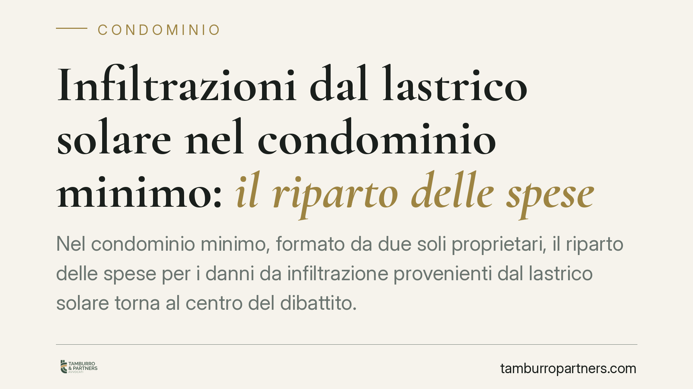

Infiltrazioni dal lastrico solare nel condominio minimo: il riparto delle spese
Nel condominio minimo, formato da due soli proprietari, il riparto delle spese per i danni da infiltrazione provenienti dal lastrico solare torna al centro del dibattito. La qualificazione del lastrico come elemento strutturale di copertura, anziché come area di uso esclusivo, può spostare il criterio applicabile dall'art. 1126 all'art. 1125 c.c., con effetti concreti sulla ripartizione dei costi.

Il caso
Le infiltrazioni provenienti dal lastrico solare generano un contenzioso ricorrente nei fabbricati di piccole dimensioni. Nel cosiddetto "condominio minimo" — l'edificio con due soli proprietari — il problema si acuisce, perché non esiste un'assemblea in senso pieno e il riparto delle spese incide direttamente sul rapporto tra due soggetti.
La questione ruota attorno a due norme del Codice civile che disciplinano criteri di riparto diversi. La corretta individuazione della norma applicabile dipende dalla qualificazione tecnica e funzionale del lastrico.
Inquadramento normativo
L'art. 1126 c.c. regola le spese di riparazione o ricostruzione del lastrico solare di uso esclusivo: chi ne ha l'uso esclusivo sopporta un terzo della spesa, mentre i restanti due terzi gravano su tutti i condòmini dei piani sottostanti cui il lastrico funge da copertura, in proporzione al valore dei rispettivi piani.
L'art. 1125 c.c. disciplina invece le spese relative ai solai posti tra due piani sovrapposti, che sono sostenute in parti uguali dai proprietari dei due piani, salva la distinzione tra la parte strutturale e le finiture (pavimento a carico del piano superiore, intonaco e soffitto a carico del piano inferiore).
Le Sezioni Unite (Cass. Sez. Un. n. 9449/2016) hanno chiarito, in tema di danni da infiltrazione derivanti dal lastrico solare di uso esclusivo, che il proprietario che ne ha l'uso esclusivo e il condominio rispondono secondo le proporzioni dell'art. 1126 c.c., in quanto la funzione di copertura del lastrico prevale ai fini del riparto. Questo resta il quadro di riferimento per il lastrico che, pur di uso esclusivo, svolge funzione di tetto rispetto a più unità sottostanti.
Il criterio distintivo: lastrico di copertura o solaio strutturale
Il punto decisivo è la qualificazione dell'elemento edilizio. Occorre distinguere:
- Lastrico solare con funzione di copertura di uso esclusivo: copre unità immobiliari di altri e appartiene, quanto all'uso, a un solo condòmino. In tal caso il riparto segue la logica dell'art. 1126 c.c. (un terzo / due terzi).
- Solaio strutturale tra due piani sovrapposti: elemento che separa e sostiene due unità poste l'una sopra l'altra, riconducibile alla disciplina dell'art. 1125 c.c. (riparto paritario, con distinzione tra struttura e finiture).
Gli indicatori concreti per la qualificazione sono la funzione portante dell'elemento, la presenza o meno di unità sovrastanti, il regime d'uso (esclusivo o comune) e la destinazione effettiva a copertura del fabbricato. Nel condominio minimo, quando il lastrico coincide con il solaio di separazione tra i due soli piani e non svolge funzione di copertura rispetto a una pluralità di unità, si apre lo spazio per l'applicazione del criterio paritario dell'art. 1125 c.c.
Rileva anche l'art. 1117 c.c., che include tra le parti comuni i tetti e i lastrici solari salvo titolo contrario: la presunzione di comunione va coordinata con l'eventuale uso esclusivo e con la reale funzione dell'elemento.
Implicazioni pratiche
Per l'amministratore — figura eventuale nel condominio minimo — cambia il criterio di predisposizione del riparto: prima di imputare le spese occorre verificare la natura dell'elemento danneggiato, evitando di applicare automaticamente l'art. 1126 c.c.
Per il proprietario che ha l'uso esclusivo l'esito non è indifferente: sotto l'art. 1126 c.c. sopporta un terzo della spesa, sotto l'art. 1125 c.c. può trovarsi a dividerla in parti uguali. La corretta qualificazione può quindi ampliare o ridurre l'esborso.
Per i condòmini dei piani sottostanti muta la posizione speculare: la quota dei due terzi prevista dall'art. 1126 c.c. non è dovuta quando l'elemento sia riqualificato come solaio strutturale.
Cosa fare in concreto
- Verificare la funzione effettiva del lastrico: copertura di uso esclusivo o solaio di separazione tra i due piani.
- Acquisire documentazione tecnica (relazione di un tecnico, planimetrie, titoli di proprietà) che attesti struttura e destinazione dell'elemento.
- Documentare lo stato dei luoghi e l'origine delle infiltrazioni prima di eseguire interventi.
- Formalizzare per iscritto ogni accordo tra i due proprietari sulla ripartizione dei costi.
- Valutare la qualificazione giuridica dell'elemento prima di avviare lavori o contenzioso: una verifica tecnico-giuridica preventiva è opportuna per individuare la norma di riparto applicabile.
Disclaimer
Contributo informativo a cura di Tamburro & Partners - Avv. Giuseppe Tamburro. Non costituisce parere legale.
Ogni condominio ha una storia a sé.
Se gestisci un'amministrazione e vuoi un confronto su una specifica questione condominiale, scrivi allo studio. Ti rispondiamo entro un giorno lavorativo.